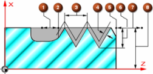

The NX turning processor supports output for the Siemens Sinumerik 840D’s CYCLE97 thread cutting cycle in these operation types:
Thread OD
Thread ID
|
 |
|
The machining cycle type maps the Sinumerik option VARI to the MOM variable mom_turn_cycle97_machining_type.
ROP and APP are always zero in the template.
The MOM procedure MOM_load_lathe_thread_cycle_params supports cycle97 events in your postprocessor when the Machine Cycle option is specified.
This procedure:
Returns 1 if the Machine Cycle option is specified and all variables are set successfully.
Returns 0 otherwise.
Call the procedure MOM_skip_handler_to_event to skip event handling until an event or motion type that you specify is encountered during processing.
The following variables are available if you create similar user-defined threading cycles:
mom_lathe_thread_clearance_start
mom_lathe_thread_clearance_end
mom_lathe_thread_root_line_start
mom_lathe_thread_root_line_end
The post created by Post Builder using the Siemens 840D option has increased support for Siemens controllers.
On the shop floor, the machine operator can adjust a single line of code, for example to change the correct finishing allowance for the contour. To make the same change with conventional output, you must recalculate many lines of code using NX Post.
|
Application |
Manufacturing |
|
Prerequisite |
Create or edit a turning operation of a type listed in the preceding article. |
|
Location in dialog box |
Machine Control→Motion Output→Machine Cycle |
|
Application |
Post Builder |
|
Prerequisite |
Create or edit a SIEMENS — SinumeriK_840D_lathe post. |
|
Location in dialog box |
Program & Tool Path→Custom Command→PB_CMD_map_cycle97_param |